Intranet
I.P Arcos
Re-diseño de la interfaz de intranet
Basado en una problemática en particular es que se decidió iniciar una investigación acerca del proceso de carga académica o comúnmente conocido como toma de ramos, de una institución en particular ARCOS.
Descubrimiento e Investigación
La problemática en la que se basa este proyecto, radica en la poca claridad de la información de las asignaturas o electivos que deben escoger los alumnos al momento de crear su horario de clases. Así como también el estilo gráfico en que se les presenta dicha información y como está distribuida, visualmente no es agradable. Se comenzó por crear una guía de entrevista y una encuesta para poder rescatar datos cualitativos y cuantitativos a fin de conocer el nivel de satisfacción de los alumnos sobre su intranet.
Síntesis
A partir de lo anterior se revisó la información recibida por las encuestas y la entrevista y se procede a sacar conclusiones:
Posteriormente después de seguir investigando se da paso a realizar un BENCHMARK para poder averiguar cómo se encontraban algunas instituciones bajo ciertos criterios con respecto de la que se está trabajando en este proyecto.
Se puede sacar como conclusión que todas las instituciones que se compararon no poseen un diseño atractivo y que se asemeje a su web institucional. Todas tienen la misma información en cuanto a las asignaturas, solo en una se mencionaba el estado académico del alumno, pero en casi todas los pasos para tomar los ramos eran largos, tediosos, etc.
Se definió al usuario

Ideación
Con el MVP definido, comenzamos con la etapa de prototipado de nuestro producto
En esta etapa del proyecto, habiendo tomado en consideración las conclusiones y algunos reclamos que se encontraron en internet, e imagenes del mismo intranet del Instituto que dan muestra de todo lo anteriormente mencionado en las encuestas y entrevista, se comenzó por definir cuál sería la propuesta de valor que se le otorgaría o se le podía ofrecer al usuario que fuera diferente pero útil a la vez.
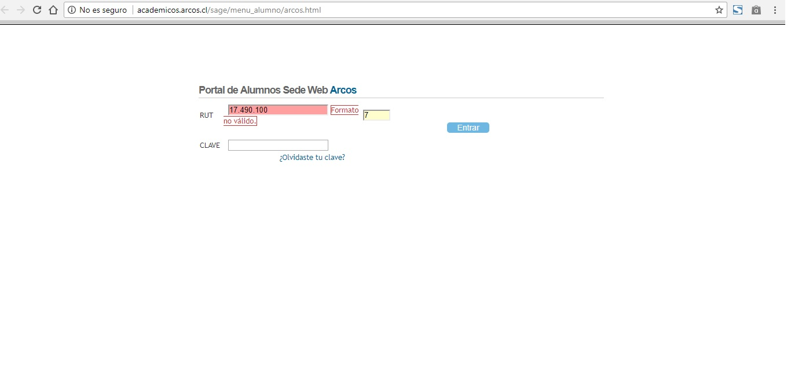 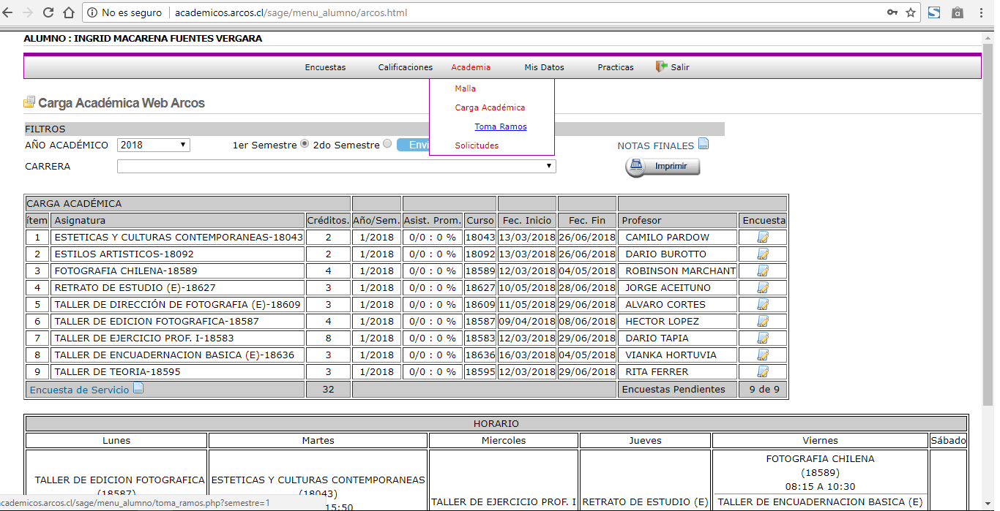 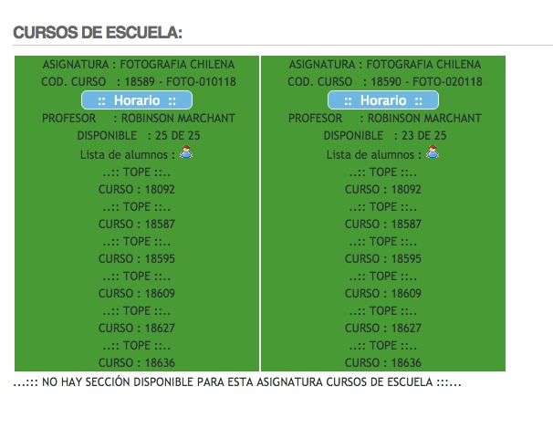Con esta referencia visual lo primero que se hace es establecer una paleta de colores más institucional y menos llamativa para no agotar a los alumnos y no confundirlos. Posteriormente se empieza el sketch de qué información debería ir y luego cómo podría distribuirse la información requerida al momento de tomar ramos.
Luego se paso a los wireframes:
Prototipado
Testing
El objetivo principal era comprobar que la información que se le entregaba al usuario era lo suficientemente clara para que pudiera realizar una toma de ramos. Si la “nueva” interfaz era agradable visualmente, y si se entendía el proceso de carga académica. Para ello se les encomendó la siguiente tarea: En el contexto de ser alumnos del Instituto Arcos, de la carrera de fotografía profesional, que realizaran el proceso de toma de ramos para el primer semestre del año 2018.
El feedback que se recibió de los usuarios:
- Les gustaría que en la información de las asignaturas además de lo que ya está, se agregase como dato el día en el cual se imparte el ramo.
- Opción de ver las secciones.
- Que se separen los ramos y se muestren como desplegable, no como estaba todo junto en una misma vista.
Lograron el objetivo de tomar ramos, cumplieron con su tarea descubriendo que el proceso fue rápido y sencillo con la información precisa. Y así tomando en cuenta sus recomendaciones es que se procede a la corrección del prototipo incluyendo los cambios anteriormente señalados.
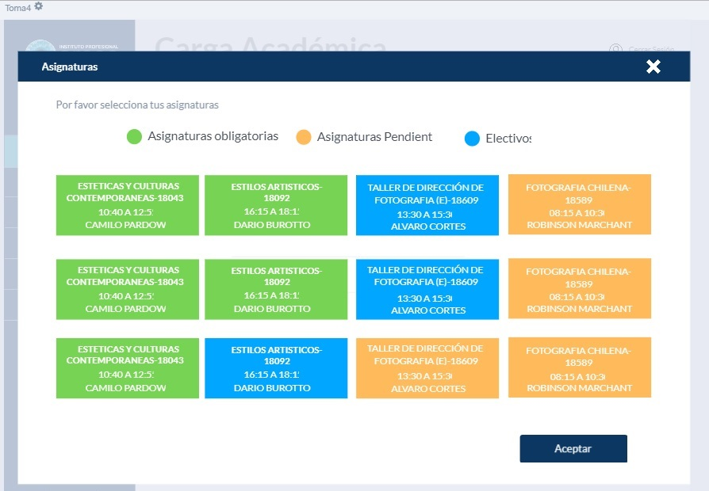De esta vista pasamos a la siguiente.
 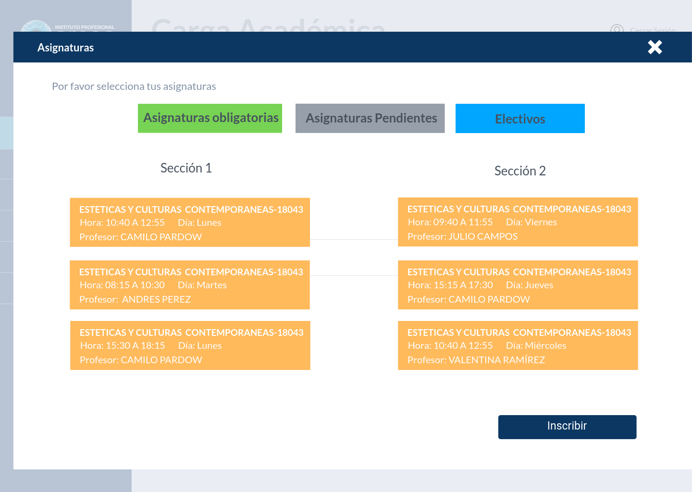
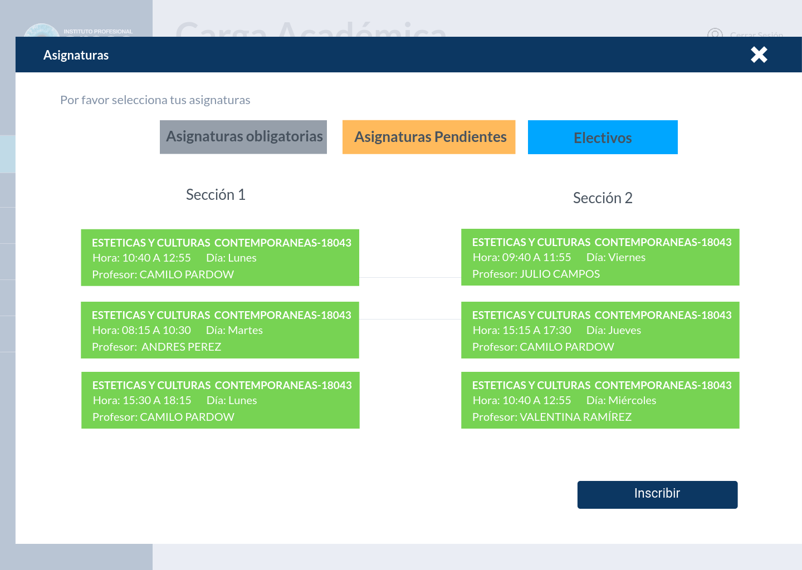
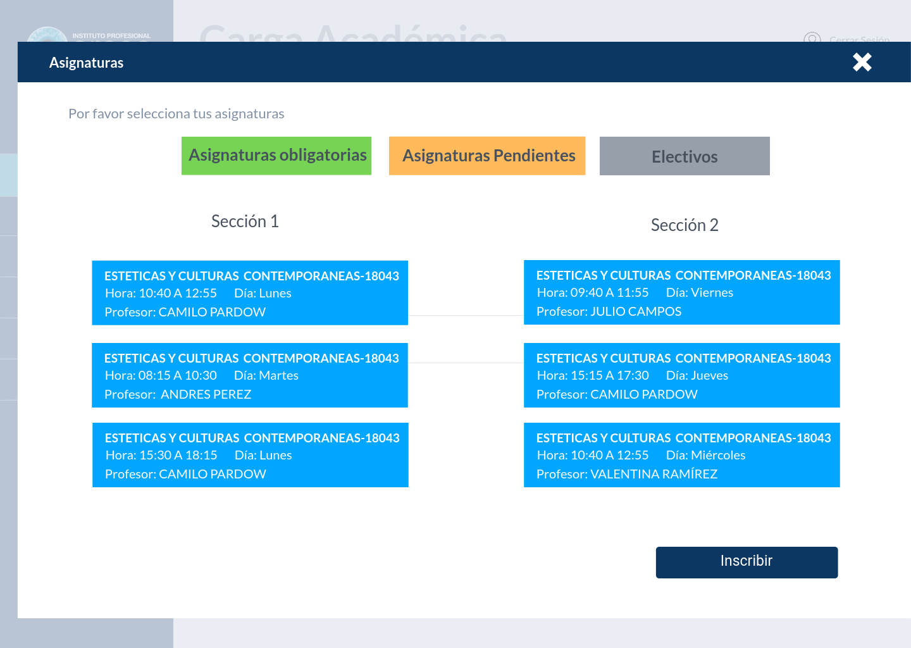
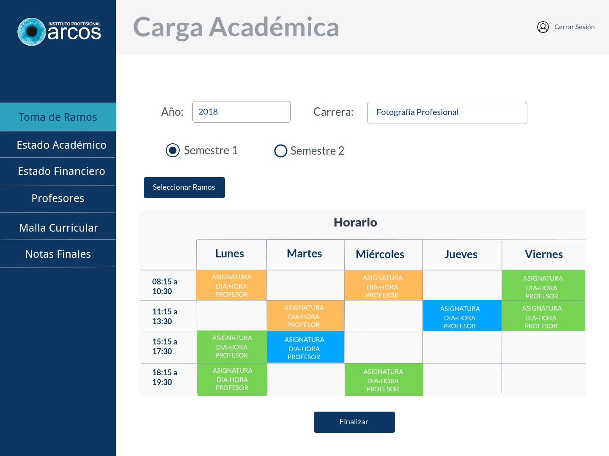
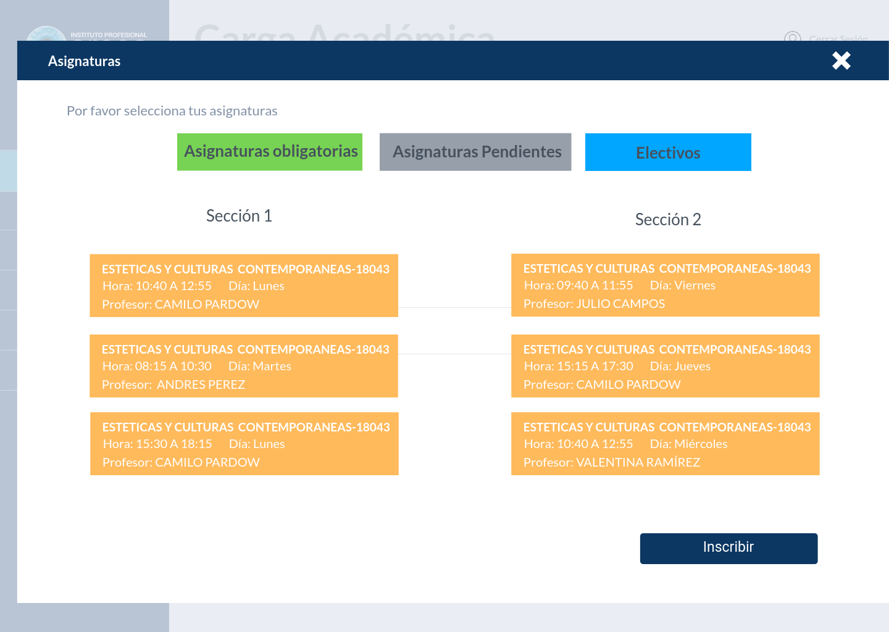
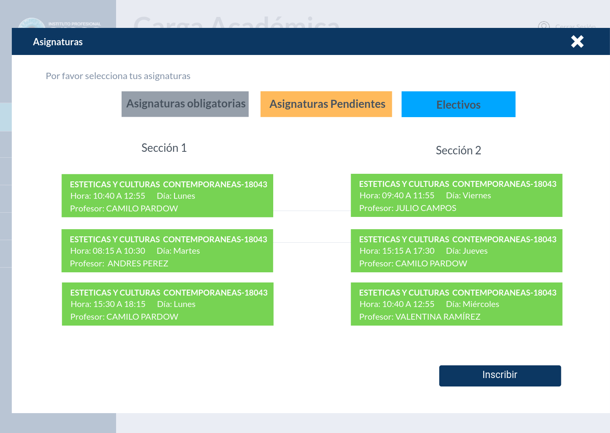
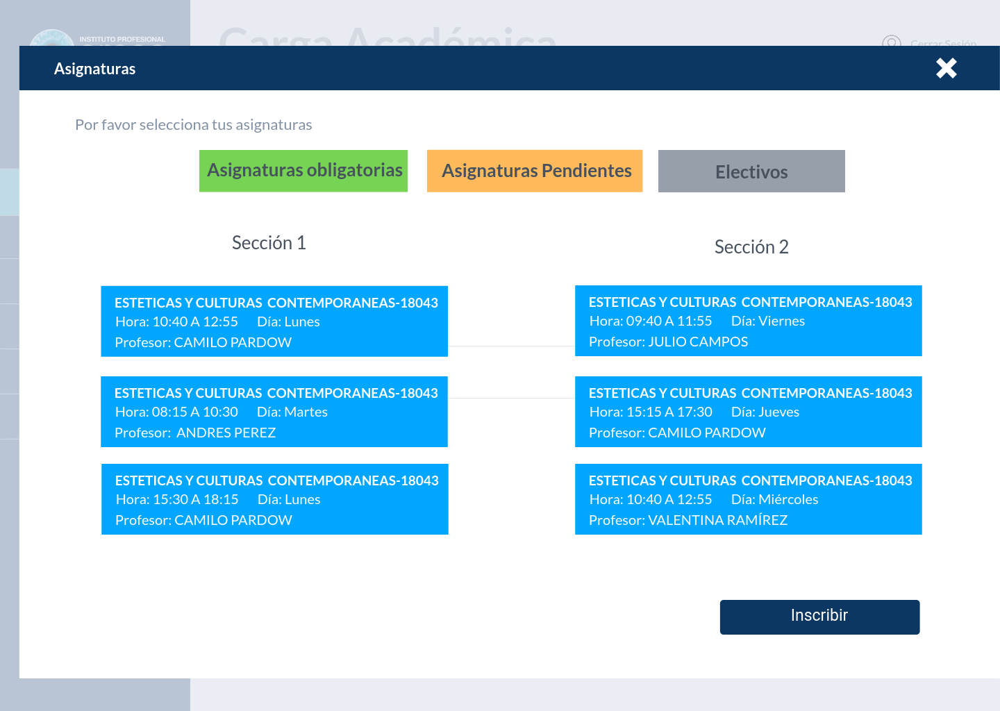
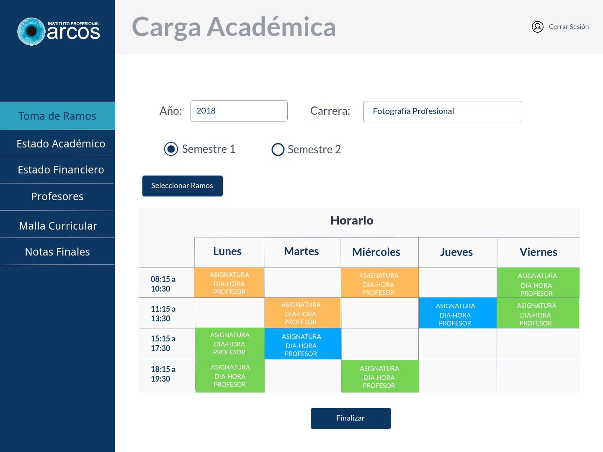
Ya finalizando con la parte de iteración, se les mostró la modificación del prototipo a los usuarios y efectivamente tuvo una mejor recepción alegando que de esta manera la información estaba más completa y ordenada.